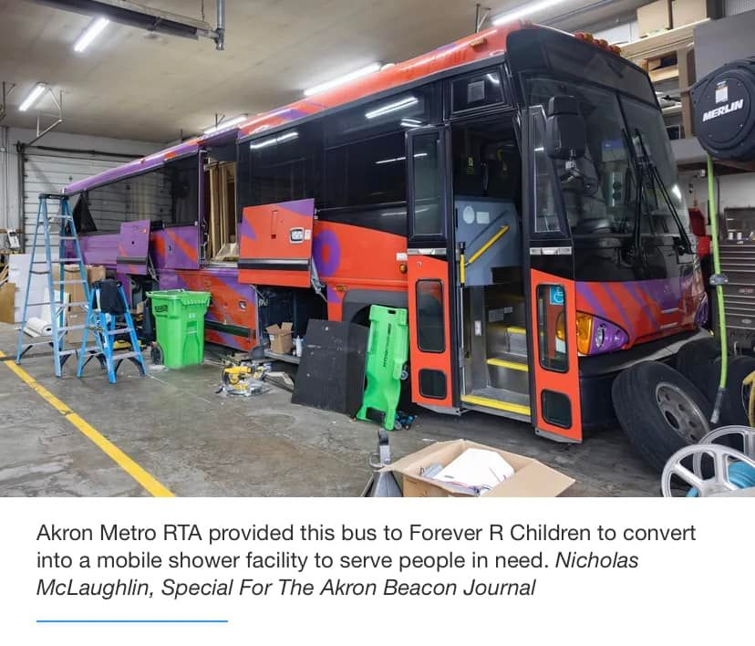

Mobile uploads
Have you heard about the mobile shower bus coming to Akron?
This is a thrilling addition to the homeless community here in Akron.
Showers are few and far between for homeless people in Akron.
Community Support Services has showers. But I’ve known many people to be banned from using them. They come with a lot of strings attached to them.
Homeless people are a diverse and complicated group of people. If you want to have less people living on the streets you need to offer a wide variety of solutions.
I’m really excited about this addition to Akron. It is run by @[100064900328172:2048:Forever R Children].
The bus was donated by Metro. They will provide free maintenance. The city of Akron is providing free water and sewer services for the bus.
It seems like a lot of people are really excited about this. That’s wonderful.
And, as with most homeless services, the real value is below the surface of the thing being offered.
Something like this bus gives a reason for homeless people to connect with you. Then you can offer them other services. But most of all, it provides a place where homeless and non-homeless people can meet. That begins to break down the walls of separation that exist in society.
This is a real step forward for Akron. I’m excited to see what is next.